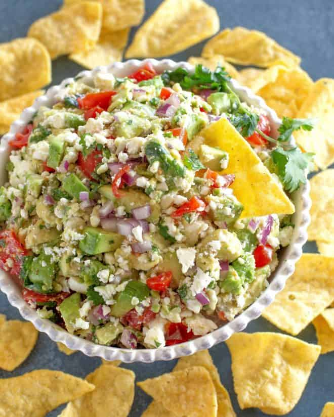

Avacado Feta Salsa

Description
This Avocado Feta Salsa is a little twist on your average salsa. The great thing about this recipe is that you can pretty much add whatever quantity of the ingredients you want to fit your specific taste preference. Its so addicting I literally cant stop eating it!
Ingredients
- 2 plum tomatoes, chopped
- 2 ripe avocados - peeled, pitted and chopped
- 1/4 cup finely chopped red onion
- 1 clove garlic, minced
- 1 lime, juiced
- 1/3 cup chopped cilantro
- 1 tablespoon olive oil
- 1 tablespoon red vinegar
- 4 ounces crumbled feta cheese
- salt and pepper to taste
Instructions
- In a bowl, gently stir together tomatoes, avocados, onion, and garlic. Squeeze some lime juice on it to give it more flavor and to keep the avocados from browning as quickly. Mix in cilantro.
- Gently stir in olive oil and vinegar. Then stir in feta. Salt and pepper to taste. Cover, and chill until serving. Serve with tortilla chips. *It's is best to make it close to when you are serving it.